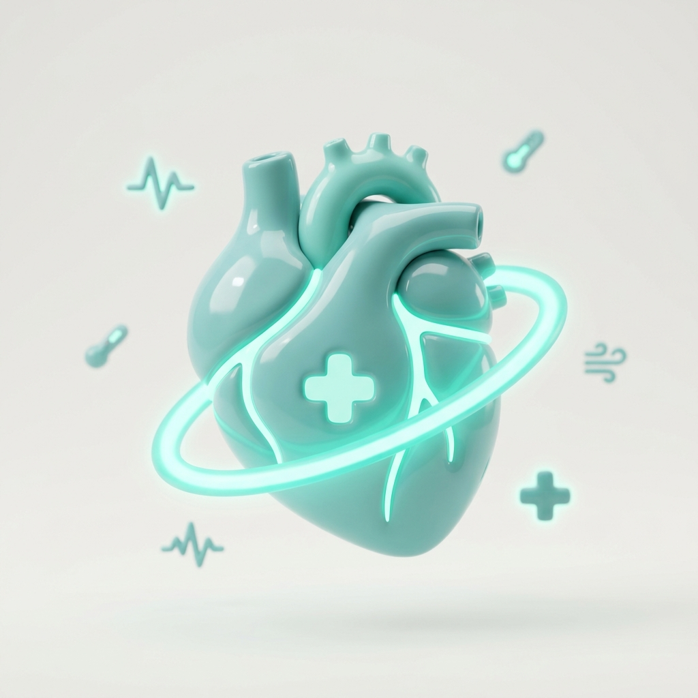
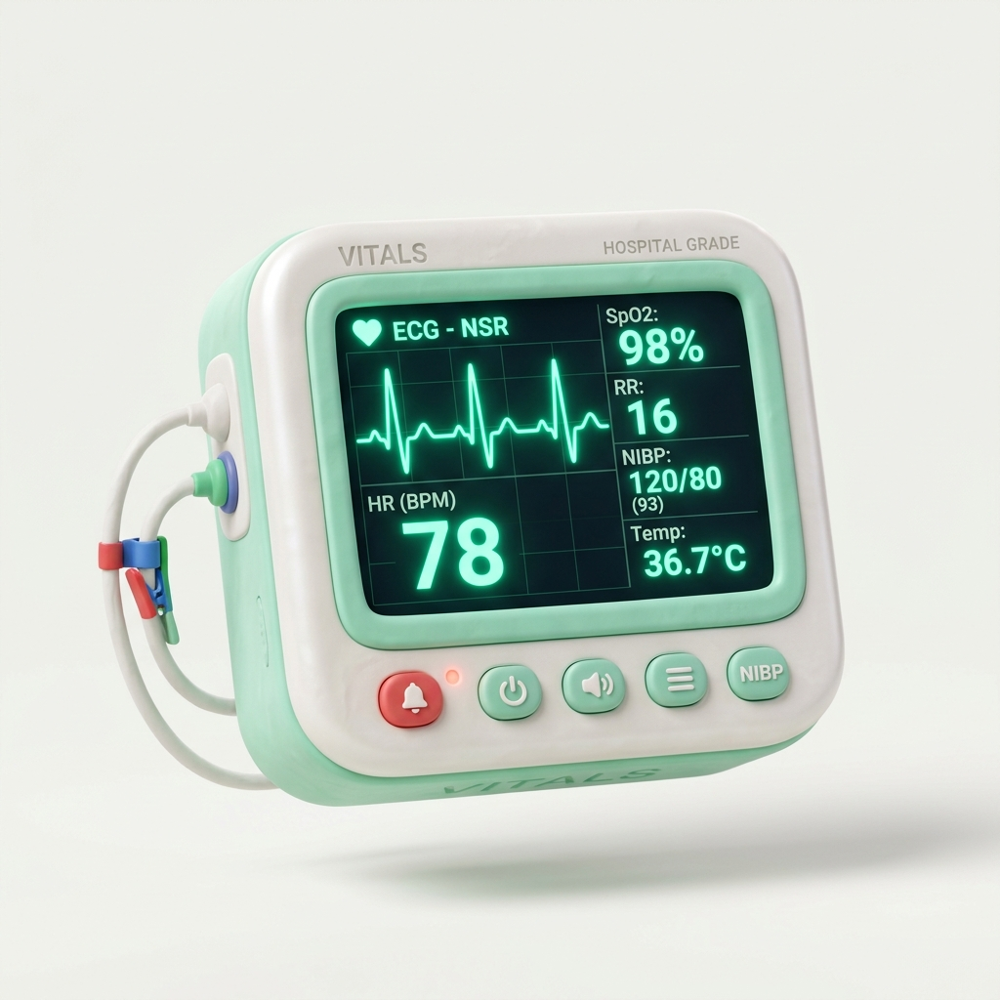
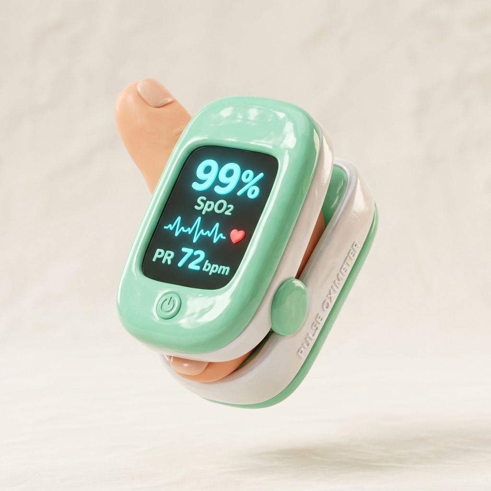
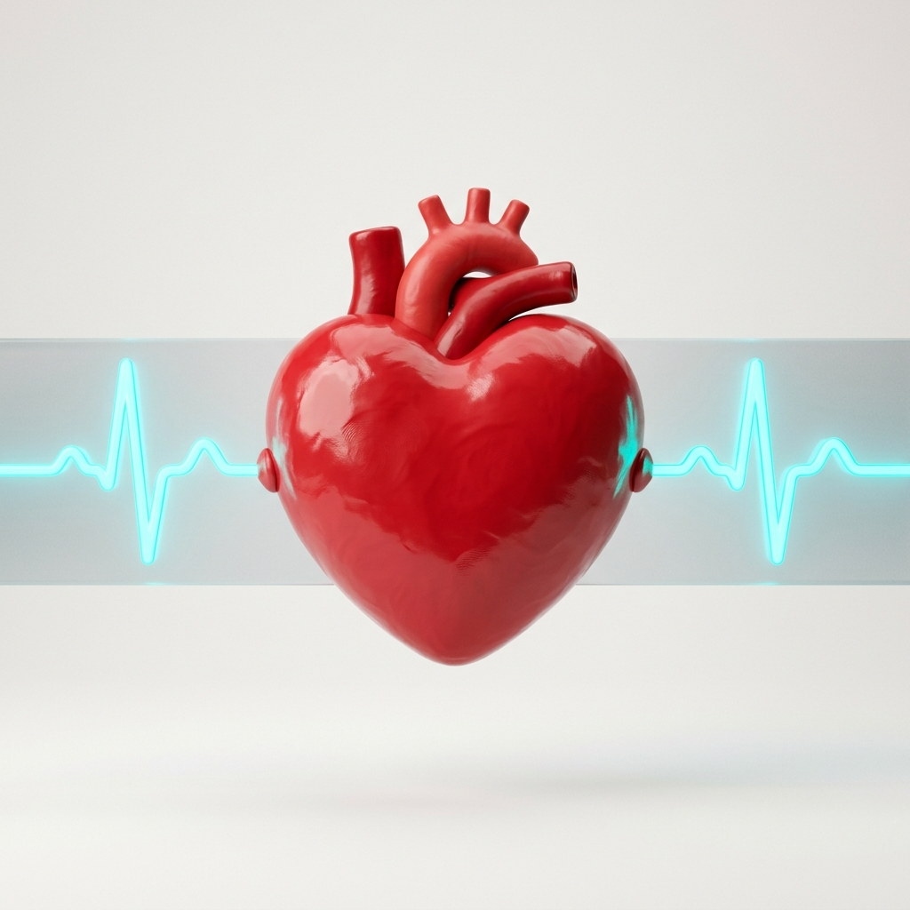
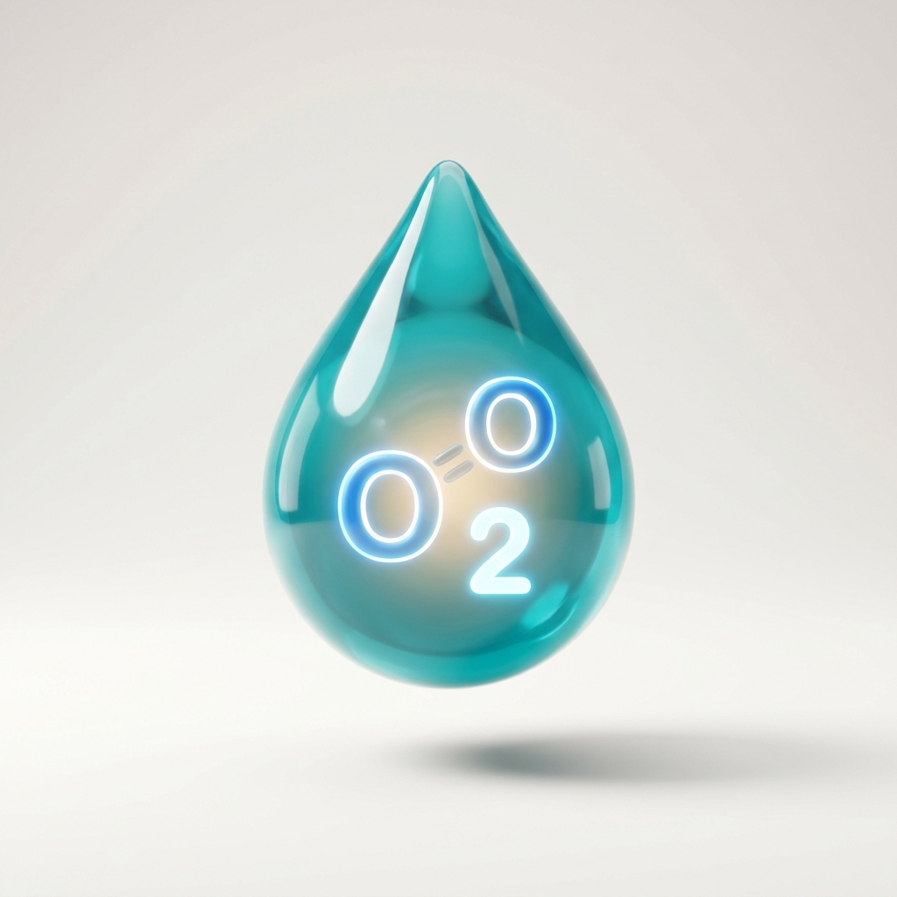
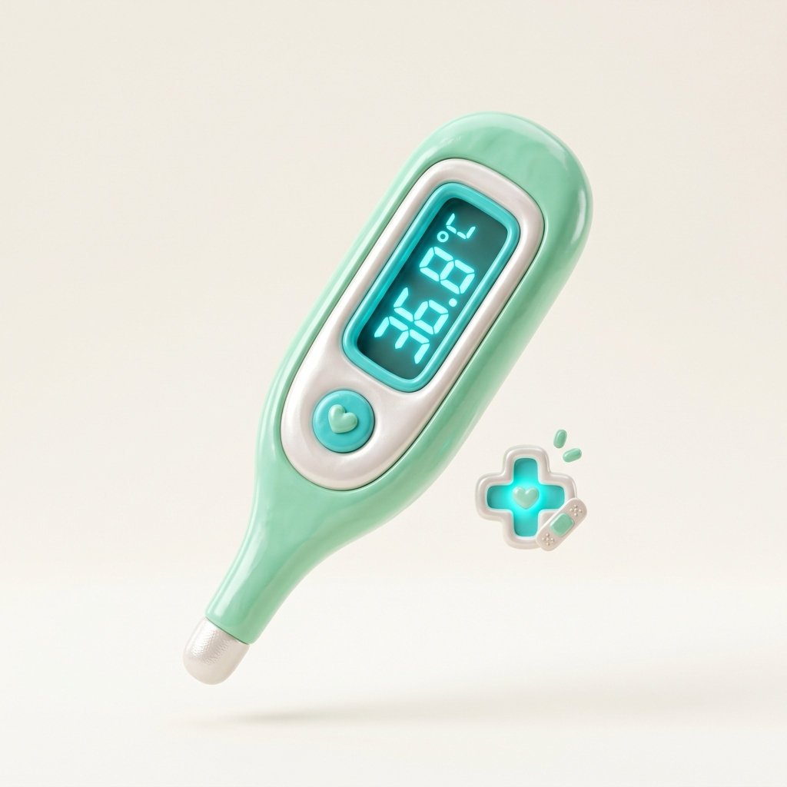
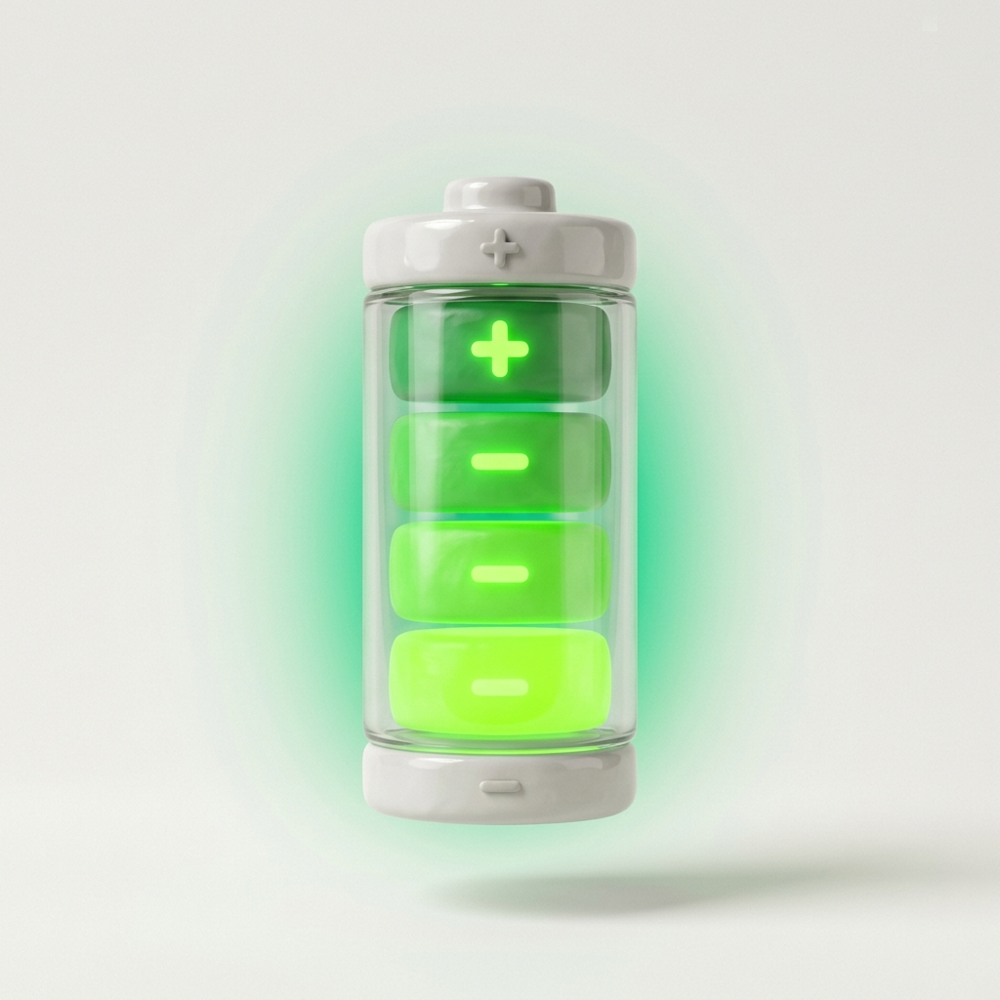

Interactive 3D Claymorphic Medical UI & Vitals Monitor (IEC 60601-1-8 Compliant)

Continuous acute telemetry & rapid response for Ward 3B. Keeping your patients safe and stable.
3 Nodes Synchronized • Acute Care





